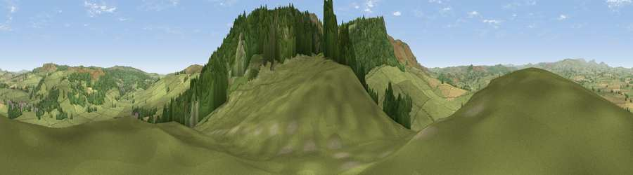

Viewpoint near Thropton
#7795 in England · top 25% of its area beats it · near ThroptonWhere it is
The exact computed spot (NU 02362 00475). Click the marker for map links.
The view, rendered

A 360° render of this exact spot computed from the terrain model, tree cover and land cover — summer colours, afternoon light, calibrated against photographs of famous viewpoints. Real trees, hedges and buildings will differ in detail.
The panorama
Grey silhouette: terrain skyline in each direction (720 bearings, Earth curvature and refraction included). Dashed green: skyline with trees (+15 m) and buildings (+8 m) as obstacles. Blue strip: how far the ground is visible on each bearing.
Where the view opens
Wedge length = distance to the farthest visible ground on that bearing (vegetation-aware). Rings at 10, 25 and 50 km.
What fills the view
65% grassland · 23% woodland · 11% cropland
Angular shares of the visible panorama (visual magnitude), not map area. Landscape diversity 0.39 (0–1 Shannon).
Key numbers
More beautiful places nearby
The staircase of upgrades: each row has a higher view potential than everything closer. Driving times are estimates from straight-line distance, calibrated against real road routing — check an actual route before setting out.
| Place | Direction | Drive | Score |
|---|---|---|---|
| Viewpoint near Hepple | SW · 2 km | ~5 min | 82.4 |
| Viewpoint c12273_7856 | NW · 16 km | ~29 min | 83.7 |
| Viewpoint c12396_7887 | NNW · 21 km | ~35 min | 85.7 |
| Viewpoint near Chillingham | NNE · 26 km | ~41 min | 88.1 |
| Long Side | SW · 106 km | ~130 min | 89.5 |
| Viewpoint near Easington | SE · 108 km | ~132 min | 90.2 |
| The Knoll | S · 515 km | ~469 min | 91.0 |
55.29838, -1.96434 · source: screening · position refined by local search. Computed location — check access rights before visiting.